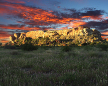
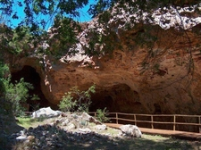

KINGDOM OF MAPUNGUBE
Mapungube was an early kingdom in southern Africa. It was in the northern part of what is now South Africa, where the Limpopo province is today.Mapungubwe was the largest kingdom in southern Africa until it was abandoned in about ad 1300.The name Mapungubwe means “hill of the jacka". In 1933 archaeologists began digging at Mapungubwe. They discovered many ancient objects. Some items, such as Chinese ceramics, are evidence of foreign trade. The best-known object found at the site is a small golden rhinoceros. The rhinoceros figurine was made more than 800 years ago.
MAKAPAN VALLEY
Makapan Valley World Heritage Site is a archeological site located within the Makapansgat and Zwartkrans Valleys, northeast of Mokopane in Limpopo province, South Africa. It is an important palaeontological site, with the local limeworks containing Australopithecus-bearing deposits dating to between 3.0 and 2.6 million years BP. The whole Makapan Valley has been declared a South African Heritage Site. Makapansgat belongs to the Cradle of Humankind.
KRUGER NATIONAL PARK

Kruger National Park is one of the worlds greatest national parks. The diversity and sheer amount of animals alone is incomparable to any other. It's home to the big 5, gets over a million visitors a year, and is about the same size as Wales. Firstly, did you know that the Kruger National Park is the largest game reserves in Africa? It spans across 19,633 square kilometers. That's just smaller than the size of Belgium! The Kruger National Park is home to over 12,000 elephants, 27,000 African Buffalo, 2,000 leopards and 2,800 lions. It's also regarded as the best place in the world to see a leopard.